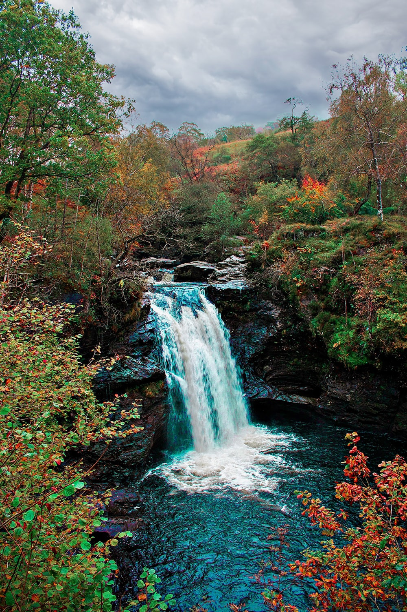
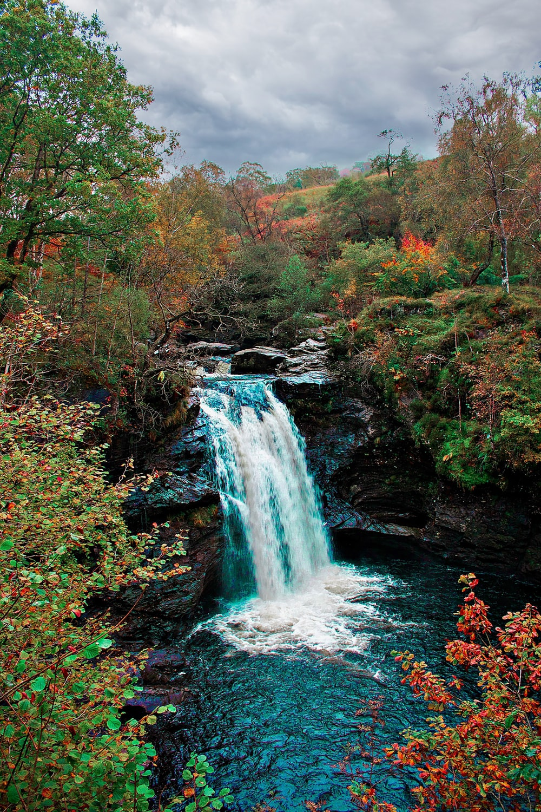

Hello, I am Susan Song, currently a rising junior at Carnegie Mellon University studying Information Systems, with a double major in Business Administration. I am interested in pursuing the technology business analyst/consulting types of jobs because I love the interconnectedness that these can bring to make products and ideas for a better world. Last summer I have worked on a start up project with a team to develop an AI exercise feedback app from scratch, and I also worked on developing an investment portfolio specifically for times during pandemics such as what ETFs to further. I also created my own website and ecommerce business on the side for more experience in the marketing and customer-relations side of business. I am also very avid in the business side. I am a member of Carnegie Mellon’s Racing Team’s finance committee which has an annual budget of $100,000 to work with for building the race car. I help with the communications between engineering and business students; I have already reached out to four companies on behalf of sponsoring the Racing Team and have received one offer so far. I am up for any challenge in an internship, or side hustle entrepreneurship project.
My Interests
 
